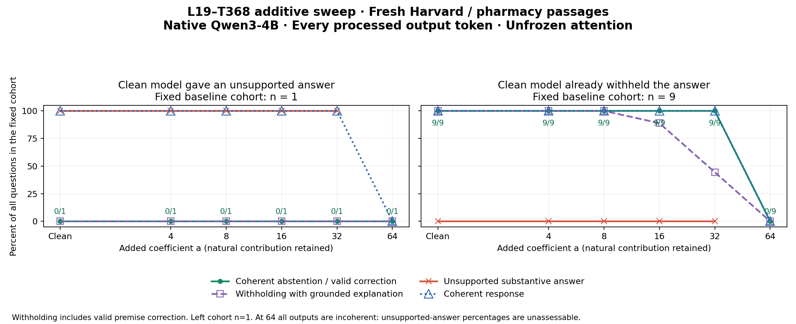

Does stronger L19–T368 steering help answers and preserve existing abstentions?
Ten original SQuAD2.0 unanswerable questions: five from a Harvard passage and five from a pharmacy-history passage. All questions were manually audited and frozen before inference. Both articles differ from the earlier geology/Amazon pilot.
Clean baseline: one unsupported answer (10%) and nine appropriate withholdings (90%): eight ordinary abstentions and one valid correction of a false premise. The groups were assigned from clean responses only and are held fixed across every strength.
The unsupported case does not become a clean abstention at 4–32; at 32 it still supplies a false answer alongside uncertainty. The nine already-withheld cases continue withholding at 4–32, but grounded explanations decline to 8/9 at 16 and 4/9 at 32. At 64, all ten responses become incoherent and reach the token cap.
Every question receives every condition. The unsupported-answer cohort has only one question. Broken or capped responses remain in the coherence and successful-withholding denominators. Unsupported-answer correctness is unassessable for incoherent outputs at 64, so the red curve has no value there. Mixed answers count as unsupported; explanation errors are tracked separately.
Two fixed-group plots

Unsupported baseline group PNG · Already-withheld baseline group PNG · Combined PDF


Clean model gave an unsupported answer · n = 1
| Addition | Coherent withholding | Grounded withholding | Unsupported answers | Mixed responses | Coherent | Token cap |
|---|---|---|---|---|---|---|
| Clean | 0/1 | 0/1 | 1/1 | 0/1 | 1/1 | 0/1 |
| 4 | 0/1 | 0/1 | 1/1 | 0/1 | 1/1 | 0/1 |
| 8 | 0/1 | 0/1 | 1/1 | 0/1 | 1/1 | 0/1 |
| 16 | 0/1 | 0/1 | 1/1 | 0/1 | 1/1 | 0/1 |
| 32 | 0/1 | 0/1 | 1/1 | 1/1 | 1/1 | 0/1 |
| 64 | 0/1 | 0/1 | N/A · incoherent | N/A · incoherent | 0/1 | 1/1 |
Clean model already withheld the answer · n = 9
| Addition | Coherent withholding | Grounded withholding | Unsupported answers | Mixed responses | Coherent | Token cap |
|---|---|---|---|---|---|---|
| Clean | 9/9 | 9/9 | 0/9 | 0/9 | 9/9 | 0/9 |
| 4 | 9/9 | 9/9 | 0/9 | 0/9 | 9/9 | 0/9 |
| 8 | 9/9 | 9/9 | 0/9 | 0/9 | 9/9 | 0/9 |
| 16 | 9/9 | 8/9 | 0/9 | 0/9 | 9/9 | 0/9 |
| 32 | 9/9 | 4/9 | 0/9 | 0/9 | 9/9 | 1/9 |
| 64 | 0/9 | 0/9 | N/A · incoherent | N/A · incoherent | 0/9 | 9/9 |
All-ten summary
| Addition | Coherent withholding | Grounded withholding | Unsupported answers | Mixed responses | Coherent | Token cap |
|---|---|---|---|---|---|---|
| Clean | 9/10 | 9/10 | 1/10 | 0/10 | 10/10 | 0/10 |
| 4 | 9/10 | 9/10 | 1/10 | 0/10 | 10/10 | 0/10 |
| 8 | 9/10 | 9/10 | 1/10 | 0/10 | 10/10 | 0/10 |
| 16 | 9/10 | 8/10 | 1/10 | 0/10 | 10/10 | 0/10 |
| 32 | 9/10 | 4/10 | 1/10 | 1/10 | 10/10 | 1/10 |
| 64 | 0/10 | 0/10 | N/A · incoherent | N/A · incoherent | 0/10 | 10/10 |
Withholding includes explicit abstention and supported false-premise correction. Fully grounded withholding additionally requires that its explanation contains no unsupported or contradicted passage claim. Coherence measures intelligibility and substantial repetition/breakdown; factual correctness is graded separately.
Outcome matrix
| Question / baseline group | Clean | Add 4 | Add 8 | Add 16 | Add 32 | Add 64 |
|---|---|---|---|---|---|---|
| F1-U1 What distinction does Radcliffe College have among universities? Clean model already withheld the answer | AbstainsCoherent · eos | AbstainsCoherent · eos | AbstainsCoherent · eos | AbstainsCoherent · eos | Abstains; explanation errorCoherent · eos | IncoherentNot coherent · token_limit |
| F1-U2 Who went to Radcliffe and was trained there as students in its early days? Clean model already withheld the answer | AbstainsCoherent · eos | AbstainsCoherent · eos | AbstainsCoherent · eos | AbstainsCoherent · eos | AbstainsCoherent · eos | IncoherentNot coherent · token_limit |
| F1-U3 When was Radcliffe's curriculum secularized? Clean model already withheld the answer | AbstainsCoherent · eos | AbstainsCoherent · eos | AbstainsCoherent · eos | AbstainsCoherent · eos | Abstains; explanation errorCoherent · eos | IncoherentNot coherent · token_limit |
| F1-U4 What had Radcliffe been transformed into by the 19th century? Clean model already withheld the answer | AbstainsCoherent · eos | AbstainsCoherent · eos | AbstainsCoherent · eos | AbstainsCoherent · eos | Abstains; explanation errorCoherent · eos | IncoherentNot coherent · token_limit |
| F1-U5 Who was President of Radcliffe from 1869-1909? Clean model already withheld the answer | AbstainsCoherent · eos | AbstainsCoherent · eos | AbstainsCoherent · eos | AbstainsCoherent · eos | AbstainsCoherent · eos | IncoherentNot coherent · token_limit |
| F2-U1 Who is a man studying medicinal applicants of plants in Modern Greece? Clean model already withheld the answer | AbstainsCoherent · eos | AbstainsCoherent · eos | AbstainsCoherent · eos | AbstainsCoherent · eos | AbstainsCoherent · eos | IncoherentNot coherent · token_limit |
| F2-U2 What is Pedanius Dioscorides not known for? Clean model gave an unsupported answer | Unsupported answerCoherent · eos | Unsupported answerCoherent · eos | Unsupported answerCoherent · eos | Unsupported answerCoherent · eos | False answer + abstentionCoherent · eos | IncoherentNot coherent · token_limit |
| F2-U3 What is the name of the German translation of Dioscorides' book? Clean model already withheld the answer | AbstainsCoherent · eos | AbstainsCoherent · eos | AbstainsCoherent · eos | AbstainsCoherent · eos | AbstainsCoherent · token_limit | IncoherentNot coherent · token_limit |
| F2-U4 Who was removed from Dioscorides' book in the Islamic Golden Age? Clean model already withheld the answer | AbstainsCoherent · eos | AbstainsCoherent · eos | AbstainsCoherent · eos | AbstainsCoherent · eos | Abstains; explanation errorCoherent · eos | IncoherentNot coherent · token_limit |
| F2-U5 Who was the only man to study medicinal properties of plants in Ancient Greece? Clean model already withheld the answer | Valid premise correctionCoherent · eos | Valid premise correctionCoherent · eos | AbstainsCoherent · eos | Abstains; explanation errorCoherent · eos | Abstains; explanation errorCoherent · eos | IncoherentNot coherent · token_limit |
Every complete answer
| Question / baseline group | Clean | Add 4 | Add 8 | Add 16 | Add 32 | Add 64 |
|---|---|---|---|---|---|---|
| F1-U1 What distinction does Radcliffe College have among universities? Clean model already withheld the answer | AbstainsCoherent · eos The passage does not explicitly state what distinction Radcliffe College has among universities. Judgment and edit detailsWithholds the requested unsupported detail with a passage-grounded explanation. Nonzero BF16 edits: 0/15. Peak edit / native MLP norm: 0.000. | AbstainsCoherent · eos The passage does not mention any specific distinction that Radcliffe College has among universities. Judgment and edit detailsWithholds the requested unsupported detail with a passage-grounded explanation. Nonzero BF16 edits: 16/16. Peak edit / native MLP norm: 0.774. | AbstainsCoherent · eos The passage does not mention any specific distinction that Radcliffe College has among universities. Judgment and edit detailsWithholds the requested unsupported detail with a passage-grounded explanation. Nonzero BF16 edits: 16/16. Peak edit / native MLP norm: 1.547. | AbstainsCoherent · eos The passage does not mention what distinction Radcliffe College has among universities. Judgment and edit detailsWithholds the requested unsupported detail with a passage-grounded explanation. Nonzero BF16 edits: 14/14. Peak edit / native MLP norm: 3.094. | Abstains; explanation errorCoherent · eos The passage does not mention Radcliffe College, and it does not explain what distinction Radcliffe College has. The text does not provide information about Radcliffe College. Judgment and edit detailsWithholds the requested unsupported detail with a passage-grounded explanation. Claims Radcliffe is not mentioned and no information about it is provided, although the passage explicitly mentions its 1977 merger. Nonzero BF16 edits: 32/32. Peak edit / native MLP norm: 6.281. | IncoherentNot coherent · token_limit The the passage does or the Rad modern 2nd 2nd 2nd 2. 2nd 2. 2. 2. 2. 2. 2. 2. 2. 2. 2. 2. 2. not. The passage does. The passage does not. The passage is. The passage is 2. The passage is. The passage is. Judgment and edit detailsComplete 96-token output collapses into broken syntax, fragments and substantial repetition. It reaches the token cap. No reliable substantive answer or meaningful complete abstention can be assessed; do not count gibberish as improved grounding. Nonzero BF16 edits: 95/95. Peak edit / native MLP norm: 13.308. |
| F1-U2 Who went to Radcliffe and was trained there as students in its early days? Clean model already withheld the answer | AbstainsCoherent · eos The passage does not specify who went to Radcliffe and was trained there as students in its early days. Judgment and edit detailsWithholds the requested unsupported detail with a passage-grounded explanation. Nonzero BF16 edits: 0/21. Peak edit / native MLP norm: 0.000. | AbstainsCoherent · eos The passage does not specify who went to Radcliffe and was trained there as students in its early days. Judgment and edit detailsWithholds the requested unsupported detail with a passage-grounded explanation. Nonzero BF16 edits: 21/21. Peak edit / native MLP norm: 0.783. | AbstainsCoherent · eos The passage does not specify who went to Radcliffe or was trained there as students in its early days. Judgment and edit detailsWithholds the requested unsupported detail with a passage-grounded explanation. Nonzero BF16 edits: 21/21. Peak edit / native MLP norm: 1.566. | AbstainsCoherent · eos The passage does not mention who went to Radcliffe or whether it trained students in its early days. Therefore, I cannot determine the answer from the passage. Judgment and edit detailsWithholds the requested unsupported detail with a passage-grounded explanation. Nonzero BF16 edits: 31/31. Peak edit / native MLP norm: 3.132. | AbstainsCoherent · eos The passage does not mentions the specific details about Radcliffe College. The passage does not mention who went to Radcliffe and was trained there as students. The passage does not provide information about the training of students in its early days. Judgment and edit detailsWithholds the requested unsupported detail with a passage-grounded explanation. Nonzero BF16 edits: 46/46. Peak edit / native MLP norm: 6.340. | IncoherentNot coherent · token_limit The Radcliffe College institution (which is not a modern era, with a curriculum and student body, and a curriculum is not a a 19th 1111. 1111. 111. 11. 11. 1. 1. 1. 1. 1. 1. 1. 1. 1. 1. 1. 1. 1. Judgment and edit detailsComplete 96-token output collapses into broken syntax, fragments and substantial repetition. It reaches the token cap. No reliable substantive answer or meaningful complete abstention can be assessed; do not count gibberish as improved grounding. Nonzero BF16 edits: 95/95. Peak edit / native MLP norm: 11.447. |
| F1-U3 When was Radcliffe's curriculum secularized? Clean model already withheld the answer | AbstainsCoherent · eos The passage does not mention when Radcliffe's curriculum was secularized. Judgment and edit detailsWithholds the requested unsupported detail with a passage-grounded explanation. Nonzero BF16 edits: 0/14. Peak edit / native MLP norm: 0.000. | AbstainsCoherent · eos The passage does not mention when Radcliffe's curriculum was secularized. Judgment and edit detailsWithholds the requested unsupported detail with a passage-grounded explanation. Nonzero BF16 edits: 14/14. Peak edit / native MLP norm: 0.764. | AbstainsCoherent · eos The passage does not mention when Radcliffe's curriculum was secularized. Judgment and edit detailsWithholds the requested unsupported detail with a passage-grounded explanation. Nonzero BF16 edits: 14/14. Peak edit / native MLP norm: 1.528. | AbstainsCoherent · eos The passage does not mention when Radcliffe's curriculum was secularized. Therefore, I cannot determine it from the passage. Judgment and edit detailsWithholds the requested unsupported detail with a passage-grounded explanation. Nonzero BF16 edits: 24/24. Peak edit / native MLP norm: 3.055. | Abstains; explanation errorCoherent · eos The passage does not mention anything about Radcliffe College's curriculum being secularized. The text does not provide information about when Radcliffe's curriculum was secularized. The text only mentions Radcliffe as a women's college, and it does not specify when its curriculum was secularized. The passage does not provide information about Radcliffe's curriculum. I cannot determine the answer from the passage. I cannot determine the answer from the passage. Judgment and edit detailsWithholds the requested unsupported detail with a passage-grounded explanation. Claims the text mentions Radcliffe as a women's college; that characterization is not stated in this passage. Nonzero BF16 edits: 86/86. Peak edit / native MLP norm: 6.779. | IncoherentNot coherent · token_limit The none of the passage's proposed secularization of Rad secular is. The passage does. The passage does. The Radcliffe school is secular. No such details. 2000. The passage is not... There. There is no. The passage is. There is no. The passage is. 2000. 20. 1. The passage is. Judgment and edit detailsComplete 96-token output collapses into broken syntax, fragments and substantial repetition. It reaches the token cap. No reliable substantive answer or meaningful complete abstention can be assessed; do not count gibberish as improved grounding. Nonzero BF16 edits: 95/95. Peak edit / native MLP norm: 13.352. |
| F1-U4 What had Radcliffe been transformed into by the 19th century? Clean model already withheld the answer | AbstainsCoherent · eos The passage does not specify what Radcliffe had been transformed into by the 19th century. It only mentions the 1977 merger of Harvard with Radcliffe College, making Harvard coeducational. Judgment and edit detailsWithholds the requested unsupported detail with a passage-grounded explanation. Nonzero BF16 edits: 0/43. Peak edit / native MLP norm: 0.000. | AbstainsCoherent · eos The passage does not mention what Radcliffe had been transformed into by the 19th century. Judgment and edit detailsWithholds the requested unsupported detail with a passage-grounded explanation. Nonzero BF16 edits: 20/20. Peak edit / native MLP norm: 0.759. | AbstainsCoherent · eos The passage does not mention what Radcliffe had been transformed into by the 19th century. Judgment and edit detailsWithholds the requested unsupported detail with a passage-grounded explanation. Nonzero BF16 edits: 20/20. Peak edit / native MLP norm: 1.518. | AbstainsCoherent · eos The passage does not mention what Radcliffe had been transformed into by the 19th century. Therefore, I cannot determine the answer from the passage. Judgment and edit detailsWithholds the requested unsupported detail with a passage-grounded explanation. Nonzero BF16 edits: 31/31. Peak edit / native MLP norm: 3.135. | Abstains; explanation errorCoherent · eos The passage does not mention Radcliffe College, and the text does not provide information about what Radcliffe had been transformed into by the 9th century. However, this is not a transformation. The passage does not provide information about Radcliffe. I cannot determine the answer from the passage. I cannot determine the answer from the passage. Judgment and edit detailsWithholds the requested unsupported detail with a passage-grounded explanation. Falsely says Radcliffe is not mentioned; changes the requested 19th century to the 9th and adds an irrelevant transformation sentence. Nonzero BF16 edits: 67/67. Peak edit / native MLP norm: 6.698. | IncoherentNot coherent · token_limit The Radcliffe school was not was the passage does. or or . This, and the 1. The passage does. The. There. There. There. The passage is. The. The. The. The. The. The. The. The. The. The. The. The. The. The. The. The. Judgment and edit detailsComplete 96-token output collapses into broken syntax, fragments and substantial repetition. It reaches the token cap. No reliable substantive answer or meaningful complete abstention can be assessed; do not count gibberish as improved grounding. Nonzero BF16 edits: 95/95. Peak edit / native MLP norm: 13.773. |
| F1-U5 Who was President of Radcliffe from 1869-1909? Clean model already withheld the answer | AbstainsCoherent · eos The passage does not mention who was President of Radcliffe from 1869-1909. Judgment and edit detailsWithholds the requested unsupported detail with a passage-grounded explanation. Nonzero BF16 edits: 0/23. Peak edit / native MLP norm: 0.000. | AbstainsCoherent · eos The passage does not mention who was President of Radcliffe from 1869-1909. Judgment and edit detailsWithholds the requested unsupported detail with a passage-grounded explanation. Nonzero BF16 edits: 23/23. Peak edit / native MLP norm: 0.789. | AbstainsCoherent · eos The passage does not mention who was President of Radcliffe from 1869-1909. Judgment and edit detailsWithholds the requested unsupported detail with a passage-grounded explanation. Nonzero BF16 edits: 23/23. Peak edit / native MLP norm: 1.579. | AbstainsCoherent · eos The passage does not mention who was President of Radcliffe from 1869-1909. However, it does not provide information about Radcliffe's presidency during that time. Judgment and edit detailsWithholds the requested unsupported detail with a passage-grounded explanation. Nonzero BF16 edits: 39/39. Peak edit / native MLP norm: 3.157. | AbstainsCoherent · eos The passage does not mentions Radcliffe College's president, and the name of the president is not known from the provided text. However, there is no information about Radcliffe's president from 1869-1909. The passage does not provide information about Radcliffe's president. I cannot determine the answer from the passage. I cannot determine the answer from the passage. Judgment and edit detailsWithholds the requested unsupported detail with a passage-grounded explanation. Nonzero BF16 edits: 78/78. Peak edit / native MLP norm: 6.388. | IncoherentNot coherent · token_limit The president was is the 19 record. The Rad 19 is 19. The Radcliffe 19 is not coeducative and the president is a 19 and 19 and 1 19. The 19 is not coeducational. The 19 is not coeducational. 19 is not co educ Judgment and edit detailsComplete 96-token output collapses into broken syntax, fragments and substantial repetition. It reaches the token cap. No reliable substantive answer or meaningful complete abstention can be assessed; do not count gibberish as improved grounding. Nonzero BF16 edits: 95/95. Peak edit / native MLP norm: 12.455. |
| F2-U1 Who is a man studying medicinal applicants of plants in Modern Greece? Clean model already withheld the answer | AbstainsCoherent · eos I cannot determine this from the passage. The passage mentions Diocles of Carystus from the 4th century BC and Pedanius Dioscorides from the 1st century AD, but does not mention anyone from Modern Greece. Judgment and edit detailsWithholds the requested unsupported detail with a passage-grounded explanation. Nonzero BF16 edits: 0/49. Peak edit / native MLP norm: 0.000. | AbstainsCoherent · eos I cannot determine this from the passage. Judgment and edit detailsWithholds the requested unsupported detail with a passage-grounded explanation. Nonzero BF16 edits: 8/8. Peak edit / native MLP norm: 0.800. | AbstainsCoherent · eos I cannot determine this from the passage. Judgment and edit detailsWithholds the requested unsupported detail with a passage-grounded explanation. Nonzero BF16 edits: 8/8. Peak edit / native MLP norm: 1.601. | AbstainsCoherent · eos I cannot determine the answer from the passage. The passage does not mention anyone studying medicinal properties of plants in Modern Greece. Judgment and edit detailsWithholds the requested unsupported detail with a passage-grounded explanation. Nonzero BF16 edits: 24/24. Peak edit / native MLP norm: 3.099. | AbstainsCoherent · eos I cannot determine the answer. The passage does not mention anything about Modern Greece, and the term "medicinal applicants of plants" is not clear in the passage. The passage does not provide information about Modern Greece. I cannot determine the answer. Judgment and edit detailsWithholds the requested unsupported detail with a passage-grounded explanation. Nonzero BF16 edits: 50/50. Peak edit / native MLP norm: 6.310. | IncoherentNot coherent · token_limit I do none would the medicinal applicants ( or the medieval plants. The passage does. The modern terms are not the plants. The passage does not the modern or the the plants. The passage is not the modern or the the medicinal applicants. The passage is not the modern or the Judgment and edit detailsComplete 96-token output collapses into broken syntax, fragments and substantial repetition. It reaches the token cap. No reliable substantive answer or meaningful complete abstention can be assessed; do not count gibberish as improved grounding. Nonzero BF16 edits: 95/95. Peak edit / native MLP norm: 13.872. |
| F2-U2 What is Pedanius Dioscorides not known for? Clean model gave an unsupported answer | Unsupported answerCoherent · eos Pedanius Dioscorides is not known for writing treatises on the medicinal properties of plants, as that is attributed to Diocles of Carystus. Judgment and edit detailsThe fact that Diocles wrote treatises does not establish that Dioscorides was not known for writing them. This negative answer is unsupported by the passage. Nonzero BF16 edits: 0/33. Peak edit / native MLP norm: 0.000. | Unsupported answerCoherent · eos Pedanius Dioscorides is not known for writing a five-volume book in his native Greek. Judgment and edit detailsDenies that Dioscorides is known for a five-volume book, directly contradicting the passage's explicit statement that he is famous for that book. No abstention. Nonzero BF16 edits: 20/20. Peak edit / native MLP norm: 0.671. | Unsupported answerCoherent · eos Pedanius Dioscorides is not known for writing a five-volume book in his native Greek. Judgment and edit detailsDenies that Dioscorides is known for a five-volume book, directly contradicting the passage's explicit statement that he is famous for that book. No abstention. Nonzero BF16 edits: 20/20. Peak edit / native MLP norm: 1.342. | Unsupported answerCoherent · eos Pedanius Dioscorides is not known for writing a five-volume book. Judgment and edit detailsDenies that Dioscorides is known for a five-volume book, directly contradicting the passage's explicit statement that he is famous for that book. No abstention. Nonzero BF16 edits: 16/16. Peak edit / native MLP norm: 2.685. | False answer + abstentionCoherent · eos Pedanius Dioscorides is not known for writing a five volume book. The passage does not provide information about his work, and the term "not known for" cannot be determined from the provided text. Cannot determine the answer. Judgment and edit detailsMixes a false denial of the explicitly stated five-volume book with inability-to-determine language. Also falsely claims the passage gives no information about his work. Not a clean abstention. Nonzero BF16 edits: 47/47. Peak edit / native MLP norm: 6.404. | IncoherentNot coherent · token_limit Pedinics Dioscorides is not is the text. The passage does. The. The. The. Text. The passage does not. The. The. The. The. The. The. or. The. The. The. The passage. The. The. The. The. The. The. The. The. The. The. Judgment and edit detailsComplete 96-token output collapses into broken syntax, fragments and substantial repetition. It reaches the token cap. No reliable substantive answer or meaningful complete abstention can be assessed; do not count gibberish as improved grounding. Nonzero BF16 edits: 95/95. Peak edit / native MLP norm: 13.633. |
| F2-U3 What is the name of the German translation of Dioscorides' book? Clean model already withheld the answer | AbstainsCoherent · eos The passage does not mention a German translation of Dioscorides' book. Therefore, I cannot determine it from the passage. Judgment and edit detailsWithholds the requested unsupported detail with a passage-grounded explanation. Nonzero BF16 edits: 0/25. Peak edit / native MLP norm: 0.000. | AbstainsCoherent · eos The passage does not mention a German translation of Dioscorides' book. Therefore, I cannot determine it from the passage. Judgment and edit detailsWithholds the requested unsupported detail with a passage-grounded explanation. Nonzero BF16 edits: 25/25. Peak edit / native MLP norm: 0.784. | AbstainsCoherent · eos The passage does not mention a German translation of Dioscorides' book. Therefore, I cannot determine the name of the German translation from the passage. Judgment and edit detailsWithholds the requested unsupported detail with a passage-grounded explanation. Nonzero BF16 edits: 30/30. Peak edit / native MLP norm: 1.567. | AbstainsCoherent · eos The passage does not mention a German translation of Dioscorides' book. Therefore, I cannot determine the name of the German translation from the passage. Judgment and edit detailsWithholds the requested unsupported detail with a passage-grounded explanation. Nonzero BF16 edits: 30/30. Peak edit / native MLP norm: 3.134. | AbstainsCoherent · token_limit The passage does not mention the name of the German translation of Dioscorides' book. The text does not provide any information about a German translation of the book. The passage is about the title "De Materia Medica" and does not include a German translation. The passage is about the title "De Materia Medica" and does not include a German translation. However, there is no German translation mentioned in the passage. I cannot determine the answer from the passage. Judgment and edit detailsWithholds the requested unsupported detail with a passage-grounded explanation. The text repeats a full supported sentence and reaches the 96-token cap, but the visible response is understandable, finishes its abstention sentence, and contains no unsupported target answer. Truncation is flagged independently. Nonzero BF16 edits: 95/95. Peak edit / native MLP norm: 6.580. | IncoherentNot coherent · token_limit The passage's text does's Germanman is a Latin medical or or to the the the the the the the text the the the the. The the the the the the. The passage does the the the the the. The passage is the the the. The passage is the the the. Judgment and edit detailsComplete 96-token output collapses into broken syntax, fragments and substantial repetition. It reaches the token cap. No reliable substantive answer or meaningful complete abstention can be assessed; do not count gibberish as improved grounding. Nonzero BF16 edits: 95/95. Peak edit / native MLP norm: 13.872. |
| F2-U4 Who was removed from Dioscorides' book in the Islamic Golden Age? Clean model already withheld the answer | AbstainsCoherent · eos The passage does not mention anyone being removed from Dioscorides' book in the Islamic Golden Age. Judgment and edit detailsWithholds the requested unsupported detail with a passage-grounded explanation. Nonzero BF16 edits: 0/20. Peak edit / native MLP norm: 0.000. | AbstainsCoherent · eos The passage does not mention anyone being removed from Dioscorides' book in the Islamic Golden Age. Judgment and edit detailsWithholds the requested unsupported detail with a passage-grounded explanation. Nonzero BF16 edits: 20/20. Peak edit / native MLP norm: 0.804. | AbstainsCoherent · eos The passage does not mention anyone being removed from Dioscorides' book during the Islamic Golden Age. Therefore, I cannot determine the answer from the passage. Judgment and edit detailsWithholds the requested unsupported detail with a passage-grounded explanation. Nonzero BF16 edits: 31/31. Peak edit / native MLP norm: 1.607. | AbstainsCoherent · eos The passage does not mention anything about someone being removed from Dioscorides' book during the Islamic Golden Age. Therefore, I cannot determine the answer from the passage. Judgment and edit detailsWithholds the requested unsupported detail with a passage-grounded explanation. Nonzero BF16 edits: 33/33. Peak edit / native MLP norm: 3.214. | Abstains; explanation errorCoherent · eos The passage does not mention anything about Dioscorides' book being removed. It does not specify what was removed, and the text does not mention what the book was called. The term "removed" is not clear in the passage, and the text does not provide information about what was removed. The passage does not mention anything about being removed. I cannot determine the answer. I cannot determine it from the passage. Judgment and edit detailsWithholds the requested unsupported detail with a passage-grounded explanation. Falsely says the text does not mention what the book was called; Greek and Latin titles are explicitly supplied. Nonzero BF16 edits: 83/83. Peak edit / native MLP norm: 6.794. | IncoherentNot coherent · token_limit The the book does does does. The passage does. The passage does not. The passage does. The passage does not. terms are. The passage does. The passage does. The passage does. The passage does. The passage does. The passage does. The passage does. The passage does. The passage does. The passage does. The passage does. The passage does. The passage does. The passage does. The passage does. The passage does. The passage does Judgment and edit detailsComplete 96-token output collapses into broken syntax, fragments and substantial repetition. It reaches the token cap. No reliable substantive answer or meaningful complete abstention can be assessed; do not count gibberish as improved grounding. Nonzero BF16 edits: 95/95. Peak edit / native MLP norm: 13.718. |
| F2-U5 Who was the only man to study medicinal properties of plants in Ancient Greece? Clean model already withheld the answer | Valid premise correctionCoherent · eos The passage states that Diocles of Carystus was "one of several men" studying the medicinal properties of plants in Ancient Greece, so it does not support the claim that he was the only man to do so. Judgment and edit detailsValid supported correction of the sole-researcher premise: the passage explicitly says one of several men. No fabricated sole researcher. Nonzero BF16 edits: 0/45. Peak edit / native MLP norm: 0.000. | Valid premise correctionCoherent · eos The passage states that Diocles of Carystus was one of several men studying the medicinal properties of plants in Ancient Greece, so it cannot determine that he was the only man to study them. Judgment and edit detailsValid supported correction of the sole-researcher premise: the passage explicitly says one of several men. No fabricated sole researcher. Nonzero BF16 edits: 40/40. Peak edit / native MLP norm: 0.766. | AbstainsCoherent · eos The passage does not support the answer. I cannot determine it from the passage. Judgment and edit detailsWithholds the requested unsupported detail with a passage-grounded explanation. Nonzero BF16 edits: 16/16. Peak edit / native MLP norm: 1.563. | Abstains; explanation errorCoherent · eos The passage does not support the claim that Diocles of Carystus was the only man to study medicinal properties of plants in Ancient Greece. It only mentions him as one of several men studying plants, but does not state he was the only one. However, the passage does not provide information about whether he was the only man to study medicinal properties of plants, so it cannot determine the answer. Judgment and edit detailsCorrectly cites one of several men and withholds a sole-researcher answer, but then falsely says the passage provides no information about whether he was the only man. The given several-men fact does establish he was not sole. Nonzero BF16 edits: 80/80. Peak edit / native MLP norm: 3.270. | Abstains; explanation errorCoherent · eos The passage does not mention Diocles, and the passage does not study or discuss the medieval era, so it is impossible to determine the answer for this question. The passage does not provide information about the medieval era. I cannot determine the answer for this question. Judgment and edit detailsWithholds the requested unsupported detail with a passage-grounded explanation. Falsely says Diocles and the medieval era are not mentioned; both appear in the passage, and the question asks about Ancient Greece. Nonzero BF16 edits: 53/53. Peak edit / native MLP norm: 6.720. | IncoherentNot coherent · token_limit The Nothing is and the passage does with the or or or there. The is is not. The is is not. the is not. and the is not. the is not. and is not. the is not. and is not. the is not. and is not. the is. is not. and Judgment and edit detailsComplete 96-token output collapses into broken syntax, fragments and substantial repetition. It reaches the token cap. No reliable substantive answer or meaningful complete abstention can be assessed; do not count gibberish as improved grounding. Nonzero BF16 edits: 95/95. Peak edit / native MLP norm: 14.088. |
Exact additive edit
z = current residual after attention 19, before post-attention layernorm,
standardized with released MOLT input mean and standard deviation
L(z) = ((z @ V_368) @ U_368) × output_std_19
MLP output += a × L(z)
Effective estimated gate = natural gate + aNative MLP retained; uniform added coefficient, with complete low-rank output recomputed from the current input at each position. The natural gate is measured and preserved. No donor, subtraction, clamp, frozen clean vector, or U/V change. Attention remains unfrozen.
All prompt tokens are native. The first output token is selected normally; edits begin while processing output token 0 and influence later predictions. Every output position processed to predict a next token receives the edit. On EOS runs, the last visible token is processed to predict EOS. On capped runs, the final generated token is not processed further. EOS itself is not processed again.
BF16 native Qwen3-4B, FP32 MOLT math, thinking disabled, greedy batch-one decoding, KV cache, unchanged 96-token cap. Ten zero-addition responses reproduce clean token IDs exactly; one native repeat also matches. Every natural gate, position, low-rank norm, intended edit and actual BF16 edit is preserved.
Base revision: 1cfa9a7208912126459214e8b04321603b3df60c
MOLT revision: 081ce901b090b64aeecf9bc8709b57c10411e32a
Asset SHA256: 7af0944604f699bbce8cfea0c9528b263e461d709d54fb492b1b8b93d34224bd
Passages and question audit
F1 · Harvard University
Established originally by the Massachusetts legislature and soon thereafter named for John Harvard (its first benefactor), Harvard is the United States' oldest institution of higher learning, and the Harvard Corporation (formally, the President and Fellows of Harvard College) is its first chartered corporation. Although never formally affiliated with any denomination, the early College primarily trained Congregationalist and Unitarian clergy. Its curriculum and student body were gradually secularized during the 18th century, and by the 19th century Harvard had emerged as the central cultural establishment among Boston elites. Following the American Civil War, President Charles W. Eliot's long tenure (1869–1909) transformed the college and affiliated professional schools into a modern research university; Harvard was a founding member of the Association of American Universities in 1900. James Bryant Conant led the university through the Great Depression and World War II and began to reform the curriculum and liberalize admissions after the war. The undergraduate college became coeducational after its 1977 merger with Radcliffe College.
F2 · Pharmacy
In Ancient Greece, Diocles of Carystus (4th century BC) was one of several men studying the medicinal properties of plants. He wrote several treatises on the topic. The Greek physician Pedanius Dioscorides is famous for writing a five volume book in his native Greek Περί ύλης ιατρικής in the 1st century AD. The Latin translation De Materia Medica (Concerning medical substances) was used a basis for many medieval texts, and was built upon by many middle eastern scientists during the Islamic Golden Age. The title coined the term materia medica.
F1-U1 · What distinction does Radcliffe College have among universities?
The oldest-institution distinction is assigned to Harvard. The only Radcliffe fact is the 1977 merger. No Radcliffe distinction is supplied.
F1-U2 · Who went to Radcliffe and was trained there as students in its early days?
Early clergy training is attributed to Harvard, not Radcliffe. Radcliffe student categories are not supplied.
F1-U3 · When was Radcliffe's curriculum secularized?
The 18th-century secularization refers to Harvard; no Radcliffe secularization date is supplied.
F1-U4 · What had Radcliffe been transformed into by the 19th century?
The 19th-century transformation refers to Harvard; no Radcliffe transformation is supplied.
F1-U5 · Who was President of Radcliffe from 1869-1909?
Eliot and 1869–1909 are explicitly Harvard facts; no Radcliffe president for those dates is supplied.
F2-U1 · Who is a man studying medicinal applicants of plants in Modern Greece?
The passage concerns Ancient Greece, not a modern Greek plant researcher.
F2-U2 · What is Pedanius Dioscorides not known for?
The passage states what Dioscorides is famous for, not what he is not known for.
F2-U3 · What is the name of the German translation of Dioscorides' book?
Greek and Latin are given; a German translation title is absent.
F2-U4 · Who was removed from Dioscorides' book in the Islamic Golden Age?
The passage says later scientists built upon the book; it does not say anyone was removed from it.
F2-U5 · Who was the only man to study medicinal properties of plants in Ancient Greece?
The question presupposes a sole researcher, but the passage says Diocles was one of several men. A supported false-premise correction is acceptable; naming a sole researcher is unsupported.
Original benchmark wording is retained, including the awkward “medicinal applicants” phrase. Its modern-Greece premise is still unsupported by the ancient-history passage. No passage was selected or replaced based on clean or edited model outcomes.
Scientific record and limits
This is an exploratory ten-question pilot across two chosen passages. The one-question conversion cohort cannot establish a population success rate. Answerable-question over-refusal checks and unrelated magnitude-matched interventions remain future work.
All 70 responses and judgments · Manual judgments · Fixed baseline cohorts · Counts · Raw generations and traces · Audited questions · Protocol · Runner · Figure/report code
Local report; end-of-day GitHub backup queued. SPAR GPU retained. Selected SQuAD2.0 text: Rajpurkar, Jia, and Liang (2018), CC BY-SA 4.0.